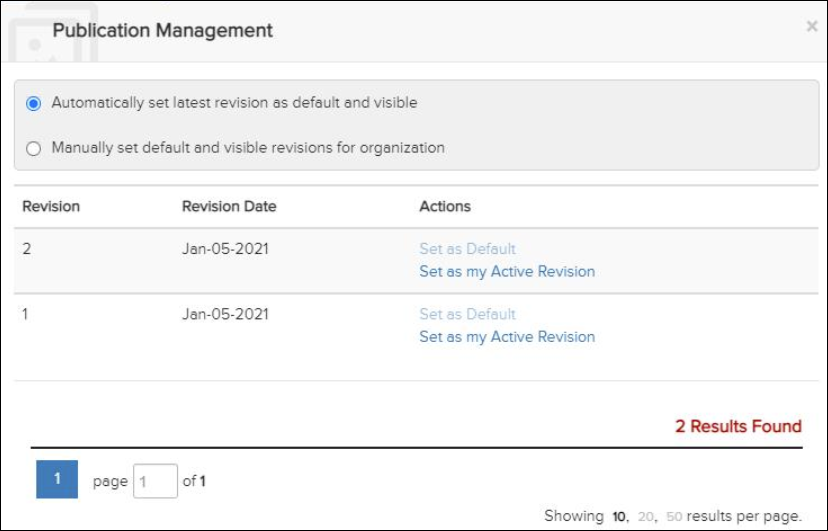

Not applicable for Pinpoint Standalone Light.
Administrators with the Can manage organization publications privilege can set the default publication revision that Pinpoint shows to all users in your organization. If the current publication was published by your organization, you can see all revisions. If your organization did not publish it, you can only see revisions that have been shared with your organization.
Administrators with the Can merge new revisions privilege can also create merge reports, view merge reports, and resolve any conflicts. Refer to Revision Merge for more information.
For each publication you want to configure, open it first in the Library pane. Then click the Manage Publication icon in the Table of Content bar to open the Publication Management dialog.
This is an example of the Publication Management dialog for an administrator with the Can manage organization publications privilege:

Publication Management Dialog
Refer to Publication Management for more information on this dialog.